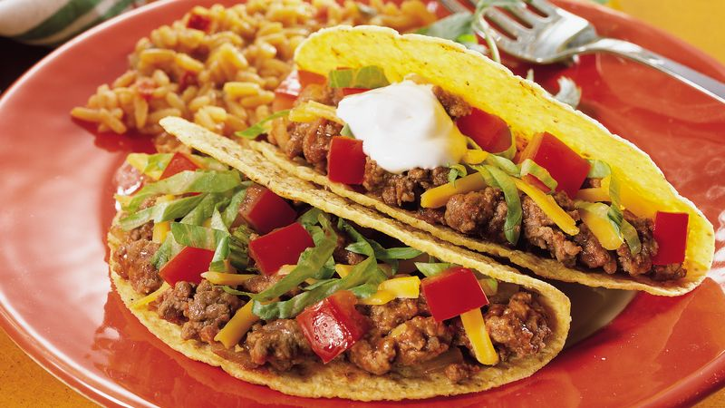

]
Ground Beef Tacos
Ground Beef Tacos
Easy to make ground beef tacos perfect for a fast wweeknight dinner

Serves 4
- 1 pound ground beef
- 2 teaspoons taco seasoning
- 1/2 cup onion
- 1 glove garlic
- your choice of toppings, lettuce, tomatto, onions
- half cup water
- Heat pan on medium high heat with 1 tablespoon oil
- cook onion util clear
- brown ground beef until cooked thorugh and drian off the fat
- add spices and half cup water bring to boil for 2 minutes then simmer on low for 15
- serve on tortillas with your choice of toppings